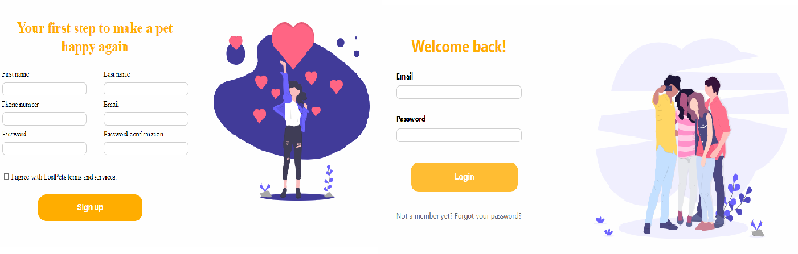

1. Informații generale
1.1. Scopul aplicației LostPets
Aplicația Web vine în ajutorul recuperării animalelor pierdute de o persoană. Dacă ai și tu un animal și vrei la rândul tău să ajuți pe alții, ai intrat unde trebuie!
1.2. Publicul țintă
Facem apel la toți iubitorii de animale, și nu numai.
2. Mod de utilizare
2.1. Cum poți accesa aplicația?
Completează aici datele tale:
2.2. Vizualizare profil
Acum ai propriul tău profil în aplicația noastră!
În plus, în funcție de activitatea ta poți primi un badge pentru primul tău animal găsit, al doilea badge la 5 animale găsite și al treilea la 10 animale.
2.3. Postează un anunț
2.4. Notificări
Odată creată o postare, utilizatorii din zona unde s-a pierdut animalul vor fi notificați urmând ca aceștia să poată updata locul unde l-au văzut ultima oară, fiind apoi notificați oamenii din noua zonă.
2.5. Anunțuri animale găsite
Cu ajutorul vostru am făcut fericiți proprietarii acestor animale:
2.6. Anunțuri animale pierdute
2.7. Vizualizare postare
Poti vizualiza informatii despre animalut si vedea istoricul locatiilor unde a fost vazut acesta.
2.8. Setări
În cazul în care dorești să îți modifici anumite date precum poză de profil, nume, e-mail, număr de telefon, parolă, poți face acest lucru foarte ușor din pagina de setări.2.9. Statistici
Statistici dupa totalul de animale pierdute/gasite, etc...